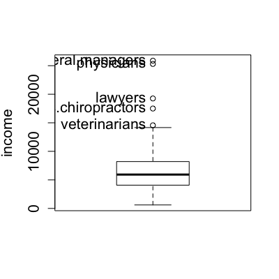
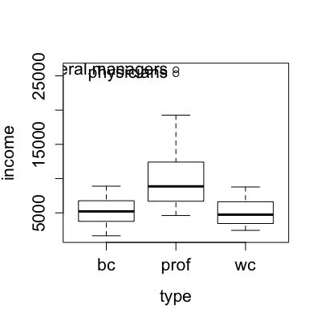

Boxplot(y, ...) Boxplot(y, g, labels, id.method = c("y", "identify", "none"), id.n = 10, xlab, ylab, ...) Boxplot(formula, data = NULL, subset, na.action = NULL, labels., id.method = c("y", "identify", "none"), xlab, ylab, ...)
Boxplot will use the row names of the data
argument, if one is given, or observation numbers."y" (the default), all outlying points are labeled; if "identify", points
may be labeled interactive; if "none", no point identification is performed.id.n high outliers and low outliers will be identified in each group, (default, 10).Boxplot will use the
variable names.~ y to produce a boxplot for the variable y, or
of the form y ~ g to produce parallel boxplots for y within levels of the grouping variable
g, usually a factor.lm).boxplot.Boxplot is a wrapper for the standard R boxplot function, providing point identification,
axis labels, and a formula interface for boxplots without a grouping variable.
Fox, J. and Weisberg, S. (2011) An R Companion to Applied Regression, Second Edition, Sage.

[1] "general.managers" "lawyers" "physicians" "veterinarians" [5] "osteopaths.chiropractors"
[1] "general.managers" "physicians"[1] "general.managers" "lawyers" "physicians" "veterinarians" [5] "osteopaths.chiropractors"[1] "general.managers" "physicians"